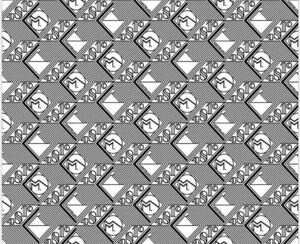

Trade Mark Journal No.2025/044 31 October 2025
WO0000001868612 (9,14,16,18,25)
Office of origin: European Union Intellectual Property Office (EUIPO)
Date of International Registration:15 May 2025
Date of designation in the UK:
15 May 2025

International priority date claimed: 2 December 2024
(European Union Intellectual Property Office (EUIPO))
(019114093)
- Class 9
- Optical apparatus and instruments; eyeglasses; sunglasses; eyeglass frames, eyeglass cases; cases and holders adapted for computer and tablets; protective covers and cases for smartphones; laptops and smart tablets; smart phones; 3d spectacles; smartwatches (data processing apparatus); smart headset; smart glasses (data processing); digital electronic devices in the form of smart wristbands, bracelets, glasses or rings; headphones and earphones; digital audio players; electronic communication devices and instruments; data processing hardware; computer; computer game software (downloadable); downloadable digital image, data and software files featuring digital models of watches and watch parts, (such as watch bands, watch dials), jewelry, handbags, backpacks, trolleys, purses, wallets, accessories of leather, keyrings, belts, cuff links, spectacles, sunglasses, writing instruments, writing accessories, stationery, perfume bottles, new tech products, in particular for use in product development, product life cycle management, in production and manufacturing (for example, 3D printing), in product data management, in visual effects and visual simulations of all types, in computer games and downloadable applications, in particular on mobile phones and/or tablets; software for video games; downloadable software applications, in particular for mobile phones and/or tablets.
- Class 14
- Jewellery; precious stones; precious metals and their alloys; cufflinks; rings (jewellery); bracelets (jewellery); earrings; necklaces (jewellery); brooches (jewellery); key rings of precious metals; clocks and chronometric instruments; watches; chronometers; clocks; watch cases; watch bracelets (jewellery); watch straps; watch movements; watch dials; buckles for watch straps; leather key fobs.
- Class 16
- Paper, cardboard, printed matters; stationery; articles of paper or cardboard, namely, boxes, envelopes and pouches for packaging; personal organisers; letter trays; pen trays; writing books, calendars, albums; covers (stationery); diaries, paperweights, writing paper; writing pads; notebooks; calendars, money clips; document holders and cases; writing instruments, namely fountain pens, ballpoint pens, pencils, rollerball pens; cases for writing instruments; inks and refills, replacement parts for writing instruments, namely, nibs, caps, and clips; inkwells and ink stands; pencils, pen and pencil refills; writing instrument holders.
- Class 18
- Articles made wholly or principally of leather or imitation leather, namely, handbags, document cases, suitcases, briefcases, key cases, trolley bags, leather key fobs, backpacks, messenger bags, tote bags, clutches, coin purses, duffle bags, leather pouches, wallets, card holders, luggage tags, travel luggage, travel bags, toiletry bags (sold empty), vanity cases (sold empty).
- Class 25
- Clothing; footwear; headgear; accessories for clothing, namely, belts and gloves.
Montblanc-Simplo GmbH
Representative: HGF Limited, 1 City Walk Leeds LS11 9DX UNITED KINGDOM